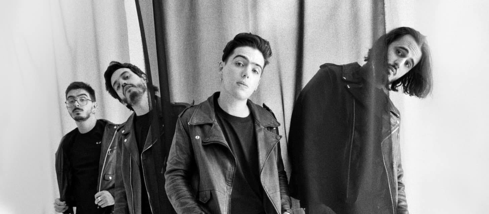

Morat es una banda colombiana de pop latino formada originalmente en Bogotá en 2011. Se dieron a conocer en 2015 con su éxito Mi nuevo vicio. Sus integrantes son Juan Pablo Isaza Piñeros, Juan Pablo Villamil Cortés, Simón Vargas Morales y Martín Vargas Morales. Hasta finales de 2016 había formado parte de la banda Alejandro Posada Carrasco, pero decidió abandonar el grupo, por lo que fue sustituido por Martín Vargas ese mismo año.

Los integrantes de Morat son colombianos y se conocen desde los 5 años de edad, ya que estudiaban juntos en el colegio Gimnasio La Montaña de Bogotá, y algunos de ellos posteriormente en la Universidad de los Andes. Dos de sus integrantes (Simón y Martín Vargas son hermanos de sangre). Comenzaron tocando juntos en varias ocasiones y cuando cursaban la secundaria Juan Pablo Isaza tomó la decisión de crear una banda cuando seguian estudiando. En el año 2014, la banda realizó una sesión de grabación en Bogotá.3Un sitio al que concurrían mucho como músicos principiantes fue La Tea, donde en un inicio sus fanáticos eran el personal de seguridad. Y con el paso del tiempo empezaron a tener una audiencia propia. Simón Vargas contó esta anécdota respecto a ese lugar: "Recuerdo que teníamos un juego: cada vez que tocábamos en La Tea tratábamos de adivinar cuánta gente iba a vernos...Y, por lo general, llegaban más personas de las que esperábamos."3En sus comienzos, no había grandes expectativas para la banda. En su primera reunión con el representante artístico Malaver, fueron rechazados después de que escuchara una de sus primeras composiciones. La respuesta que les dio fue la siguiente: "Creo que ustedes son talentosos, pero nunca tendrán una canción en la radio. Deberían haber nacido en Argentina a fines de los setenta, porque su música no es adecuada para lo que está sucediendo en este momento".3Pero una vez que los escuchó tocar en vivo en La Tea tiempo después, Malaver quedó impresionado por el potencial de los chicos y decidió representarlos
Los integrantes de la banda solían ir a una finca en las afueras de Bogotá llamada "La Morat", lugar donde la banda hizo sus primeros ensayos. La finca pertenecía a un familiar del ex integrante Alejandro Posada Carrasco, Antonio de Morat.1 Antes de adoptar el nombre Morat, eran conocidos como "Malta". Pero, tiempo después, al ir a firmar con Universal Music, una banda brasileña ya estaba registrada como Malta, así que cambiaron su nombre al actual.
Juan Pablo Villamil Cortés: Vocalista principal de Morat, toca el banjo, ukelele y guitarra. Es egresado de Música e Ingeniería Industrial de la Universidad de los Andes.
Juan Pablo Isaza Piñeros: Vocalista principal y guitarrista de Morat, también toca piano y ukelele. Estudia Administración de Empresas de la Universidad de los Andes, está estudiando una segunda carrera con énfasis musical y es cofundador de la exitosa casa de producción Mapache.
Simón Vargas Morales: Vocalista y bajista de Morat, maneja los modulares. Es escritor, en 2020 presentó su primer libro "A la orilla de la Luz". Estudio Historia en la Universidad de los Andes. En el 2020 creó en conjunto con la youtuber mexicana Nath Campos un podcast en Spotify llamado "Simón dice, Nath contradice".
Martín Vargas Morales:Vocalista y baterista de Morat, además toca los sintetizadores. Es egresado de Diseño Gráfico de la Universidad de los Andes. Es cofundador de la reconocida marca General Studios.
| Título | Lanzamiento | Discográfica |
|---|---|---|
| Sobre el amor y efectos secundarios | 17 de Julio del 2016 | Universal Music Spain |
| Balas perdidas | 26 de Octubre del 2018 | Universal Music Spain | ¿A dónde vamos? | 15 de Julio del 2021 | Universal Music Spain |
| Si ayer fuera hoy | 4 de Noviembre del 2022 | Universal Music Spain |